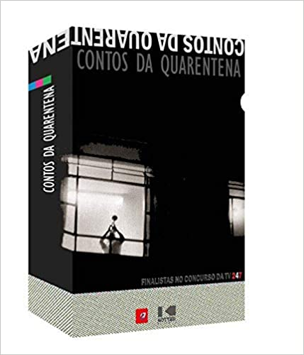
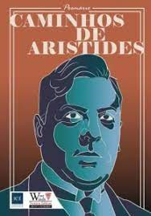
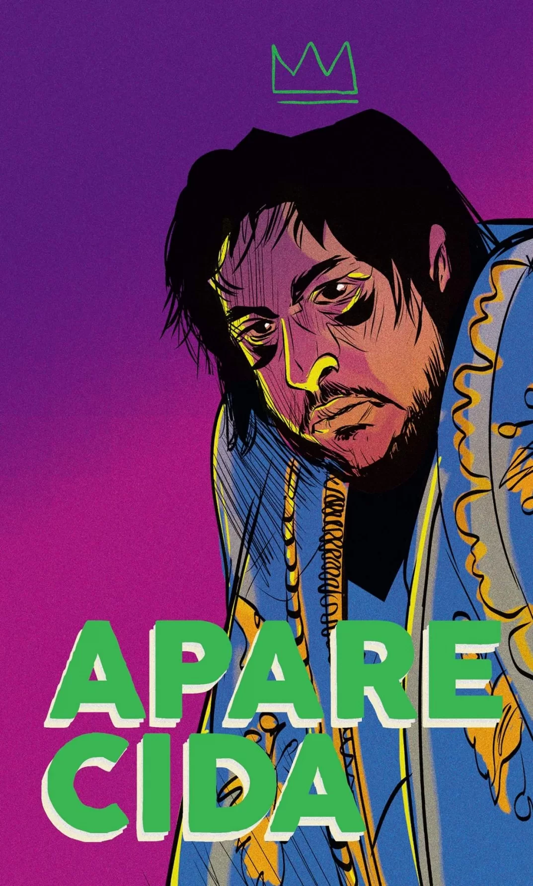
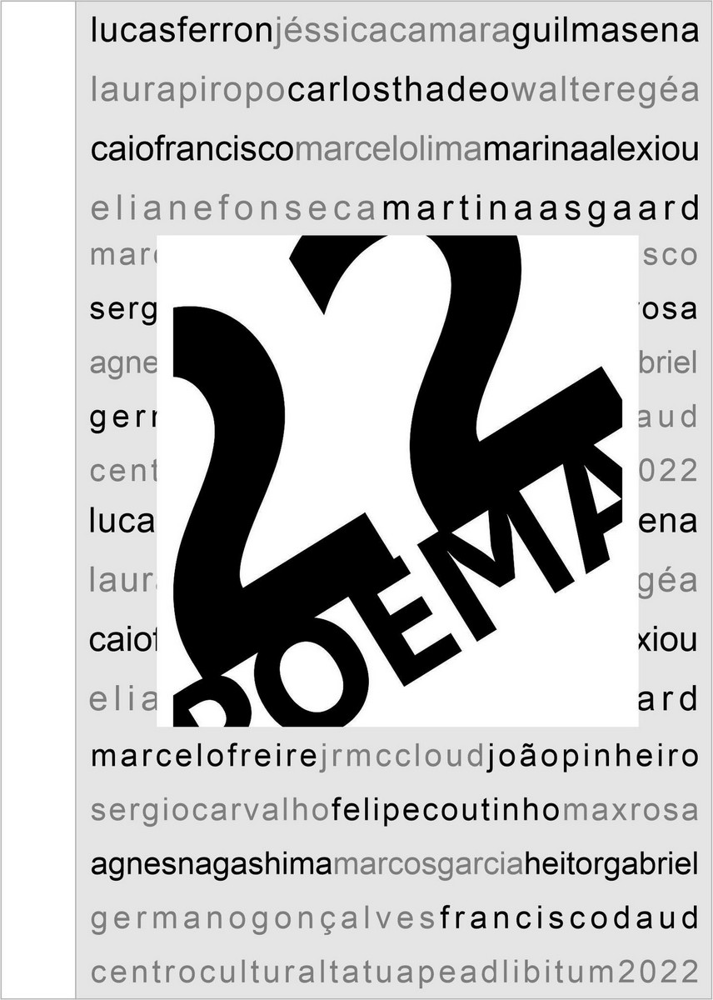
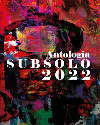

O LAND ROVER NEGRO E A CAIXA DE DROPS
Para quem procura boas estórias este livro do escritor gaúcho Maximiliano da Rosa reúne textos de vários gêneros como dramas urbanos e psicológicos, romance, policial, histórias de amor, surrealismo e realismo fantástico, entre outros. São várias contos curtos impactantes e emocionantes, que exploram diversas nuances da narrativa. Algumas dos textos selecionadas para compor a obra foram premiados em concursos literários no Brasil, entre eles o Concurso de Contos Paulo Leminski. Leia agora.




